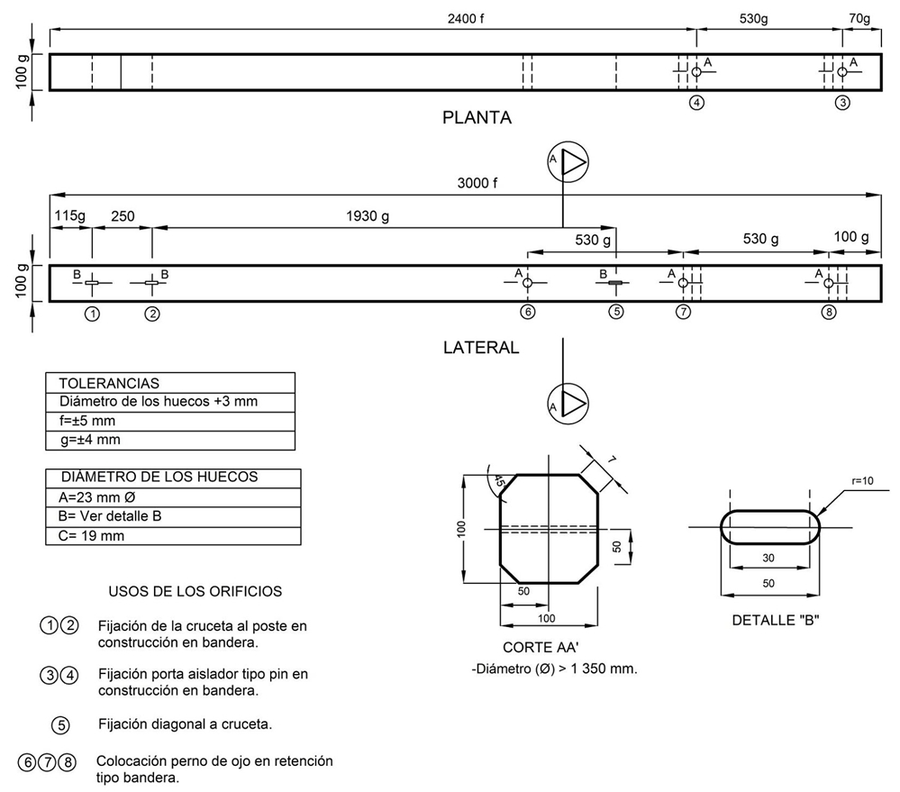

Siempre es más fácil conocer las normas ENEL-CODENSA
Rolex Rolex gold watch, compared with ordinary materials, gold watches are often expensive, but the replica rolex gold watch has the role of swiss replica watches hedging, so that it often becomes the first choice for collectors. The gold watch has value in the world, largely because the omega replica watch brand launched a commemorative limited edition watch or a replica hublot complex movement process or artistic attainments deep watches, mostly preferred gold precious metals such material. These watches tend to have a strong hedging function, therefore, Rolex Rolex gold watch reputation.

ET401 Crucetas, vigas, suplementos y cercos de maderas aserradas
Datos adicionales
Número de especificación
ET 401
Fecha de vigencia
09/07/2019
Herramientas adicionales
- Contenido Ocultar
- 1.0 OBJETO
- 2.0 ALCANCE
- 3.0 CONDICIONES DE SERVICIO Y LUGAR DE INSTALACIÓN
- 4.0 DEFINICIONES
- 5.0 SISTEMAS DE UNIDADES
- 6.0 NORMAS DE FABRICACIÓN Y PRUEBAS
- 7.0 REQUERIMIENTOS TÉCNICOS PARTICULARES
- 7.1 QUÍMICOS
- 7.2 MECÁNICOS
- 8. CRITERIOS DE ACEPTACIÓN O RECHAZO
- 8.1 MUESTREO
- 8.2 ACEPTACIÓN O RECHAZO
- 9. PRUEBAS DE RECEPCIÓN
- 9.1 PRUEBA DIMENSIONAL
- 9.2 ANÁLISIS QUÍMICO
- 9.3 PRUEBAS MECÁNICAS
- 10 MARCACIÓN
- 11 REQUISITOS DE LAS OFERTAS
- 12. REQUISITOS AMBIENTALES
1.0 OBJETO
Esta especificación técnica tiene por objeto establecer las características y requisitos técnicos que deben cumplir y los ensayos a los cuales deben ser sometidos las crucetas, vigas, suplementos y cercos de maderas duras que se emplean para sostener líneas aéreas destinadas a la conducción de energía eléctrica y a las cuales se dará tratamiento preservativo como lo específica este documento.2.0 ALCANCE
Esta especificación técnica se aplicará en todas las crucetas, vigas, suplementos y cercos de maderas duras que adquiera CODENSA S.A. ESP y que se emplean para sostener líneas aéreas destinadas a la conducción de energía eléctrica.3.0 CONDICIONES DE SERVICIO Y LUGAR DE INSTALACIÓN
Las crucetas, vigas, suplementos y cercos de maderas duras que se emplean para sostener líneas aéreas destinadas a la conducción de energía eléctrica son elementos mecánicos de madera que trabajan a tracción, flexión y compresión, cuya única función es suspender, tensionar y sostener el cable en las líneas aéreas, estos elementos serán empleados a la intemperie, siendo ésta generalmente en climas que van desde el cálido al frío y desde el húmedo hasta el seco.Las crucetas, vigas, suplementos y cercos son usados para la fijación de los diferentes elementos utilizados en los sistemas de distribución urbana y rural.
Los postes donde serán instaladas serán de concreto ó madera.
Las crucetas, vigas, suplementos y cercos estarán sometidos a todo tipo de contaminación ambiental desde polución de gran ciudad, hasta rural con alta contaminación fitosanitaria
El ambiente donde serán instaladas las crucetas, vigas, suplementos y cercos de madera duras podrá tener las siguientes características:
| CARACTERÍSTICAS AMBIENTALES | |
| a. Altura sobre el nivel del mar | Desde 2900 a los 600 m.s.n.m. |
| b. Ambiente | Tropical |
| c. Humedad relativa | Desde 100% al 20% |
| d. Temperatura máxima y mínima | +45 °C y -5 °C respectivamente |
| e. Temperatura promedio | 14 °C |
| f. Polución | Alta con productos de la combustión y altamente contaminada por otros agentes. |
Cruceta. Pieza de sección rectangular ó cuadrada con dimensiones y perforaciones específicas destinadas a soportar Líneas Aéreas.
Cerco. Pieza aserrada de sección cuadrada de 100 mm de lado y una longitud de 2,2 m destinadas a la instalación de los equipos de protección del transformador.
Viga. Pieza aserrada o labrada con sección rectangular de 100 mm x 200 mm y longitud de 2,5 m destinada a soportar el peso de los transformadores en estructuras en H.
Suplementos. Piezas aserradas de sección rectangular con dimensiones y perforaciones específicas destinadas a separar la ubicación de los porta-aisladores en estructuras triangulares con doble aislador tipo Pin.
Los materiales solicitados en la presente especificación son:
- Crucetas de madera 2 x 0,1 x 0,1 m
- Crucetas de madera 2,5 x 0,1 x 0,1 m
- Crucetas de madera 1 x 0,076 x 0,076 m
- Crucetas de madera 0,7 x 0,1 x 0,1 m
- Crucetas de madera 2,3 x 0,1 x 0,1 m
- Crucetas de madera 3 x 0,1 x 0,1 m
- Crucetas de madera 1,2 x 0,1 x 0,1 m
- Cerco de madera 2,2 x 0,1 x 0,1 m
- Cerco de madera 4.0 x 0,1 x 0,1 m
- Viga de madera 2,5 x 0,2 x 0,1 m
- Viga de madera 2,9 x 0,1 x 0,1 m
- Suplemento de madera para extremo de poste 0,3x0,1x0,06 m
4.0 DEFINICIONES
Se establecen las siguientes definiciones para efectos de esta especificación técnica:- Acebolladura. Separación del leño, generalmente entre dos anillos consecutivos.
- Anillo de Crecimiento. Sección transversal de la capa de leño formada durante un periodo vegetativo. Se caracteriza por el contraste más o menos marcado entre el leño tardío de un período y el leño temprano del siguiente. Está constituido por una capa que contiene madera temprana y tardía. Los anillos de crecimiento no son fáciles de distinguir en algunas especies de madera.
- Apanalamiento. Grietas muchas veces no visibles en la superficie, que ocurren en el interior de una pieza, generalmente siguiendo los radios medulares.
- Ataque de Insectos. Daño causado por insectos o larvas. Los rastros de insectos o el acanalamiento de la superficie de la cruceta, vigas, suplementos y cercos no se consideran como ataque de insectos.
- Corazón Hueco. Un vacío en el duramen causado por pudrición o ataque de insectos.
- Fractura Transversal. Una separación de las células de la madera a través del grano. Tales roturas pueden ser debidas a movimientos internos que resultan del encogimiento longitudinal disparejo ó de esfuerzos externos.
- Franja Muerta. Un área sin corteza que resulta de la destrucción progresiva de las células de crecimiento de la madera y la corteza en los bordes de la franja. En la cruceta, vigas y cercos, franja muerta se caracteriza por una apariencia descolorida, degradada por la intemperie y por la falta de evidencia de crecimiento encubridor en los bordes de la superficie afectada.
- Grieta. Separación de los elementos en la dirección de los radios leñosos y cuyo desarrollo no alcanza a afectar los dos puntos opuestos de la superficie de la cruceta, vigas y cercos.
- Grano Espiralado. Grano en el cual las fibras están dispuestas formando hélices con su eje en dirección del eje del árbol, en vez de seguir la dirección del árbol.
- Herida Cicatrizada. Excoriación infligida durante el crecimiento del árbol, la cual ha curado y cerrado sin restablecer la sección normal.
- Madera de Reacción. Madera normal con propiedades diferentes a la del resto del leño, formada típicamente en algunas partes del mismo, debido a esfuerzos mecánicos de tracción y compresión en el árbol en pie. En las maderas coníferas se considera efecto causado por compresión (madera roja) y en las latifoliadas defecto causado por tracción (madera blanca). Tanto la madera de compresión como la madera de tracción se encoge en exceso longitudinalmente comparado con la madera normal y los esfuerzos altos de tracción que se imponen durante el secado puede causar la rotura de las fibras de la madera.
- Mancha. Decoloración de la albura producida por hongos que no altera la estructura leñosa y no se acompaña de ablandamiento o desintegración de la madera.
- Médula Hueca. Un hueco pequeño en el centro del fuste ó un nudo, causado por la desintegración de la médula.
- Nudos en Racimo. Dos ó más nudos agrupados como unidad, envueltos por las fibras de la madera; diferente a nudos en grupo donde cada uno es una unidad. Se considera a la unidad de nudos en racimo como un solo nudo.
- Nudo Podrido. Un nudo que contiene pudrición. Se reconocen dos tipos de nudos podridos.
1. Tipo I. Nudos que contienen fibras blandas o sueltas (pudrición) que pueden extender por todo el nudo al interior de la cruceta, vigas ó cercos y que son asociados con pudrición de corazón.
2. Tipo II. Nudos que contiene fibras blandas o sueltas (pudrición) que no son asociados con pudrición de corazón.
- Pudrición. Descomposición de la sustancia leñosa por acción de hongos xilófagos.
- Pudrición Avanzada. Etapa de descomposición en la cual la madera presenta cambios evidentes en su apariencia, peso específico, composición, dureza y otras características mecánicas. Se reconoce la descomposición porque la madera se ha vuelto blanda y esponjosa, muchas veces con descolorización marcada.
- Pudrición Incipiente. Etapa inicial de descomposición que no ha progresado lo suficiente para ablandar o disminuir la dureza de la madera. Está acompañado usualmente por una ligera descolorización de la madera.
- Rajadura. Separación de la madera en dirección longitudinal que se extiende completamente a través de la pieza de una superficie a la otra.
- Secado al Aire. Secado mediante el uso de aire sin calefacción a la intemperie ó bajo cubierta.
- Secado Artificial. Secado utilizando aire caliente a menos de 65°C en un horno secador.
- Carga Nominal. La carga nominal que podrá ser aplicada a la cruceta, vigas o cercos en sentido transversal sin que se presenten deformaciones permanentes.
- Carga Última. La carga máxima experimental que se aplica a una cruceta, vigas o cercos antes que se produzca el colapso.
- Colapso. Es la condición que se presenta cuando la cruceta, vigas o cercos sometido al ensayo de carga última muestra bajo la acción de la carga aplicada, grietas y rajaduras, que inutilizan la cruceta, vigas o cercos.
- Deformación Permanente. Flecha permanente registrada después que ha cesado de actuar una carga sobre la cruceta, vigas o cercos.
- Madera Aserrada. Es la pieza cortada longitudinalmente por medio de sierras manuales ó mecánicas.
5.0 SISTEMAS DE UNIDADES
Todos los documentos tanto de la propuesta como del contrato de suministro, deben expresar las cantidades numéricas en unidades del Sistema Internacional (SI). Si el OFERENTE utiliza en sus libros de instrucción, folletos o dibujos, unidades en sistemas diferentes, debe hacer las conversiones respectivas.6.0 NORMAS DE FABRICACIÓN Y PRUEBAS
Las crucetas, vigas, suplementos y cercos deben ser maquinados e inmunizados de acuerdo con lo establecido en esta especificación y en las normas:| NORMA | DESCRIPCIÓN |
| NTC794 | Método para la evaluación en campo de preservativos para madera en postes redondos. |
| NTC824 | Maderas. Glosario de defectos. |
| NTC1093 | Métodos de ensayo para evaluar la penetración en madera y para diferenciar entre el duramen y la albura. |
| NTC1128 | Método de ensayo para preservativos de madera mediante el sistema de bloques en tierra. |
| NTC1149 | Maderas, preservación. Terminología general. |
| NTC1157 | Método de ensayo para determinar la retención de preservativos en madera y el contenido de componentes activos en los preservativos. |
| NTC1822 | Madera, madera preservada, toma de muestras. |
| NTC2083 | Madera, madera preservada, clasificación y requisitos. |
| NTC2189 | Madera, piezas de madera aserrada para líneas aéreas de energía eléctrica y de telecomunicaciones. |
| SC-M-016 | Manual de control de calidad para plantas de inmunización de madera. |
| SC-M-017 | Manual de aceptación e inspección de insumos de madera. |
| AWPA A9-97 | Método standard para el análisis de madera inmunizada y soluciones de inmunizantes por espectroscopia de emisión de rayos-x |
| ANSI 05.1 | Norma de los estados unidos para postes de madera, especificaciones y mediciones |
| ANSI DT-5C | Especificación de la administración de electrificación rural para postes, pies de amigo y anclajes de madera |
| REA DT-19 | Especificación de la administración de electrificación rural para control de calidad e inspección de productos de madera. |
| SC-E-022 | Especificaciones técnicas para postes de madera. |
| AWPA | Libro de normas de la asociación norteamericana de preservadores de madera. |
| NTC-ISO-2859-1 | Procedimiento de muestreo para inspección por atributos. Parte 1: planes de muestreo determinados por el nivel aceptable de calidad (NAC) para inspección lote a lote. |
7.0 REQUERIMIENTOS TÉCNICOS PARTICULARES
Son elementos de características geométricas, mecánicas y fitosanitarias tales que les permiten adaptarse a las limitaciones impuestas por otros elementos y por el medio ambiente.Las crucetas, vigas y cercos de maderas duras de la presente especificación técnica deben ser de madera iguales o superiores a 0,9 g/cm3 de maquí, amargoso, cococristal, nazareno ó marfil y similares, inmunizados con óxidos hidrosolubles y deben cumplir con lo descrito en la presente especificación. Por ningún motivo puede ser de una de las siguientes maderas Caguí, Chuguacá, Cedrela, Zapatillo, Guaimaro, Sangre de Toro.
7.1 QUÍMICOS
7.1.1 TRATAMIENTOTodas las crucetas, vigas y cercos antes del proceso de inmunización deben someterse a un proceso de secado artificial. Este secado debe hacerse técnicamente evitando la creación de zonas de decadencia (secamiento no uniforme) por ciclos incorrectos, hasta que se llegue a un porcentaje de humedad uniforme máximo del 20% en la profundidad máxima de la albura cuando se realice la medición respectiva.
La inmunización de las crucetas, vigas y cercos debe efectuarse mediante la utilización de preservativos en forma de óxidos hidrosolubles CCA tipo C (Cromo - Cobre - Arsénico), formulación de óxidos, en pasta o concentrado líquido. No se permiten otros inmunizantes.
La composición nominal de los ingredientes activos y los límites de su variación, sea en pasta, concentrado líquido, son las siguientes:
| DESCRIPCIÓN | MÍNIMO % | NOMINAL % | MÁXIMO % |
| Trióxido de Cromo, CrO3 | 44,5 | 47,5 | 50,5 |
| Óxido Cúprico, CuO | 17 | 18,5 | 21 |
| Pentóxido de Arsénico, As2O5 | 30 | 34 | 38 |
Los compuestos químicos para formular la pasta o concentrado líquido será cada uno en exceso de 95% puros en base anhídrica y el preservativo comercial será rotulado para indicar el contenido total de los ingredientes activos.
Las pruebas para establecer conformidad serán mediante análisis utilizando un analizador por fluorescencia de rayos-X y la norma AWPA A9 (última revisión).
Nota: Los preservativos CCA se formulan con óxidos que forman compuestos químicos en la madera que no se ionizan. Las formulaciones de CCA con sales son más corrosivas a los métales que las formulaciones con óxidos y pueden causar depósitos superficiales.
El preservativo debe ser producido por un fabricante de reconocido prestigio.
El tratamiento a utilizarse será el del tipo célula llena; el material será sometido a un vacío de no menos de 560 mm Hg a nivel del mar durante no menos de 30 minutos antes de llenar el autoclave con preservativo, y debe estar de acuerdo a lo especificado en las normas AWPA C1 y C4 última revisión.
Para los resultados de la inmunización, la penetración y retención del preservativo serán comprobados con tarugos tomados de cualquier parte de la periferia de la cruceta, viga, suplemento o cerco entre 300 mm de los extremos de la cruceta, vigas, suplemento y cercos.
Todos los agujeros serán taponados inmediatamente con tarugos inmunizados que entren bien apretados.
7.1.2 - PH de Soluciones de Trabajo.
El pH de las soluciones de trabajo de CCA tipo C estará entre los límites 1,6 a 3,0 y de preferencia será determinado a una concentración de óxidos en la solución de 15-22 g/l y a una temperatura ambiente de 20°-30° C. Si una solución de trabajo tiene el pH fuera de los límites especificados, y se puede demostrar que con el ajuste de la concentración esté dentro de los límites, se considerará que la solución está conforme a los requisitos de está especificación técnica.
7.2 MECÁNICOS
Las crucetas, vigas, suplementos y cercos de maderas duras que se emplean para sostener líneas aéreas destinadas a la conducción de energía eléctrica serán de la forma y dimensiones que se muestran en la figura 1, 2, 3, 4, 5, 6, 7, 8, 9, 10 y 11.En las figuras de cada pieza en madera se indican las tolerancias,longitudes, distancias entre huecos y diámetro de los agujeros.
8. CRITERIOS DE ACEPTACIÓN O RECHAZO
Para este caso se considerará que existe un lote:• Cuando los materiales de producción pertenecen a un mismo lote de materia prima ó producto terminado.
• Cuando la solución de inmunización es la misma.
8.1 MUESTREO
A menos que se especifique otra condición, el muestreo se llevará a cabo tomando muestras para cada prueba de acuerdo a lo indicado en las Tablas 2 y 3, según la norma NTC –ISO 2859-1.8.2 ACEPTACIÓN O RECHAZO
Si el número de elementos defectuosos es menor o igual al correspondiente número de defectuosos (dado en la norma NTC-ISO 2859-1 en la tercera columna de las Tablas 2 y 3), se deberá considerar que el lote cumple con los requisitos relacionados en esta Especificación; en caso contrario el lote se rechazará.| TAMAÑO DEL LOTE | TAMAÑO DE LA MUESTRA | NUMERO PERMITIDO DE DEFECTUOSOS | NUMERO DEFECTUOSOS PARA RECHAZO |
| 2 a 8 | A = 2 | 0 | 1 |
| 9 a 15 | B = 3 | 0 | 1 |
| 16 a 25 | C = 5 | 0 | 1 |
| 26 a 50 | D = 8 | 1 | 2 |
| 51 a 90 | E = 13 | 1 | 2 |
| 91 a 150 | F = 20 | 1 | 2 |
| 151 a 280 | G = 32 | 2 | 3 |
| 281 a 500 | H = 50 | 3 | 4 |
| 501 a 1200 | J = 80 | 5 | 6 |
| 1201 a 3200 | K =125 | 7 | 8 |
| 3201 a 10000 | L =200 | 10 | 11 |
(NORMA NTC-ISO 2859-1 TABLA1 - TABLA 2A)
| TAMAÑO DEL LOTE | TAMAÑO DE LA MUESTRA | NUMERO PERMITIDO DE DEFECTUOSOS | NUMERO DEFECTUOSOS PARA RECHAZO |
| 2 a 8 | A = 2 | 0 | 1 |
| 9 a 15 | A = 2 | 0 | 1 |
| 16 a 25 | B = 3 | 0 | 1 |
| 26 a 50 | B = 3 | 0 | 1 |
| 51 a 90 | C = 5 | 1 | 2 |
| 91 a 150 | C = 5 | 1 | 2 |
| 151 a 280 | D = 8 | 1 | 2 |
| 281 a 500 | D = 8 | 1 | 2 |
| 501 a 1200 | E = 13 | 1 | 2 |
| 1201 a 3200 | E =13 | 1 | 2 |
| 3201 a 10000 | F =20 | 1 | 2 |
(NORMA NTC-ISO 2859-1 TABLA 1 - TABLA 2A)
9. PRUEBAS DE RECEPCIÓN
9.1 PRUEBA DIMENSIONAL
La verificación de las dimensiones se hará con los instrumentos de medida que den la aproximación requerida (cinta metálica con divisiones de 1 mm para longitudes y diámetros). El tamaño de la muestra deberá estar de acuerdo con la Tabla 2.Las crucetas, vigas y cercos de madera deben ser sometidos a las siguientes pruebas:
9.1.1 Inspección visual
Se verificará:
Marcación
Las crucetas, vigas y cercos deben llevar, colocado, la siguiente inscripción colocada al fuego:
- Palabra BOG-CUN.
- Logotipo ó razón social del inmunizador.
- Año de Inmunización.
- N° de lote de inmunización.
- Longitud y especificación técnica ET - 401
- Tipo de madera y proceso de inmunización.
- Orden de Compra de CODENSA o pedido abierto.
Defectos Prohibidos
• Agujeros, abiertos o taponados, excepto los especificados para fijar herrajes y los de muestreo que serán taponados.
• Clavos, puntillas u otro metal que no ha sido expresamente autorizado por CODENSA S.A. – ESP.
• Daños por perforadores marinos.
• Fracturas transversales.
• Franjas muertas.
• Pudrición
• Médula Hueca.
• Acebolladura.
• Corteza Inclusa.
• Herida Cicatrizada
• Madera de Reacción
Defectos permitidos
• Mancha. Se permite la mancha que no esté acompañada por el ablandamiento u otra desintegración (pudrición) de la madera.
• Herida Cicatrizante. Se permite la herida cicatrizante siempre y cuando el fabricante mediante pruebas mecánicas, de inmunización, y de caracterización del tipo de madera garantice las condiciones de operación bajo los parámetros indicados en esta especificación.
Defectos Limitados.
• Grano Espiralado
Cuando las crucetas, vigas y cercos presente el fenómeno de grano espiralado este no podrá exceder en giro máximo de 90° por la de longitud de la cruceta, en cualquier parte de la cruceta, y un número no mayor del 10% de las crucetas de cada lote.
• Grieta y Rajadura
Una rajadura o una combinación de dos grietas sencillas (cada una terminanda en la médula y separada por no menos de 30 mm). Toda otra combinación de grietas o una rajadura no podrán extenderse por la cruceta, vigas y cercos más del 25% de la longitud de la cruceta, ni tener una profundidad mayor 5 mm y no podrán tener una separación mayor de 2 mm.
• Nudos
Cualquier hueco proveniente de un nudo no podrá tener una profundidad mayor del 10% del lado de la cruceta.
Se admitirá un nudo por metro lineal de cruceta. Las crucetas que presenten nudos con podredumbre (blanda) que se extiende dentro de la cruceta más de 10 mm, serán rechazadas.
9.2 ANÁLISIS QUÍMICO
Se verificaran la penetración y la retenciónLa penetración del preservativo no será menos de lo especificado en la siguiente tabla 4.
| INMUNIZACIÓN Y RESULTADOS DE INMUNIZACIÓN | |||
| TIPO | Retención mínima kg/m3de CCA | Zona de análisis longitud del tarugo | Penetración mm ó % de albura |
| Cruceta, vigas, suplementos y cercos | 16 | 25 mm | 3 mm a 5 mm ó 100% de albura |
La retención del preservativo no será menos que lo especificado en la tabla 4, y la composición química estará entre los límites de la tabla 1.
Las pruebas para establecer conformidad serán mediante análisis utilizando un analizador por fluorescencia de rayos-X y la norma AWPA A9 (última revisión).
9.3 PRUEBAS MECÁNICAS
Las crucetas, vigas y cercos deberán tener las siguientes resistencias mecánicas como mínimo:• Módulo de esfuerzo de la fibra 70 Mpa.
9.3.1 Condiciones generales
Aspecto - Las caras de las piezas de madera aserradas deberán ser cepilladas. Las crucetas llevarán las cuatro aristas biseladas y tendrán el grano paralelo al eje longitudinal de la pieza, aceptándose una desviación máxima de 1 en 8.
Secamiento - Los materiales utilizados en la fabricación de las piezas de madera aserrada deberán someterse a un proceso de secado artificial, antes del proceso de inmunización. Este secado debe hacerse térmicamente hasta que llegue a un porcentaje de humedad uniforme máximo del 20 % a 10 mm de profundidad.
Inmunización – Debe efectuarse mediante el sistema de célula llena descrito en el numeral 7.1.1 y el resultado debe estar de acuerdo con la tabla 1.
9.3.2 Determinación de la resistencia mecánica
Las piezas de maderas aserradas serán sometidas a esfuerzos de flexión estática los cuales se aplicarán como indica las figuras 1 y 2 del anexo 2.
La resistencia a la flexión se determinará así:
Fmax = (3 x Pmax x L)/(A x e2)
Donde:
F max. = Resistencia máxima a la flexión ( kg/ cm2)
P max = Carga de rotura en Newtons (N).
L = Luz entre soporte ( cm )
A. = Ancho de la cruceta en dirección radial (cm).
e. = Altura de la cruceta en dirección tangencial.
10 MARCACIÓN
Se deben marcar las crucetas, vigas, suplementos y cercos de acuerdo a lo indicado en el numeral 9.1.1.111 REQUISITOS DE LAS OFERTAS
El oferente adjuntará con su propuesta, para el fabricante de los bienes cotizados, la certificación del “Sistema de calidad” de acuerdo con la norma NTC-ISO 9001 expedida por unaentidad idónea, adicionalmente debe anexarse, el certificado de “conformidad de producto”con norma técnica, expedido por la autoridad competente debidamente autorizada por la ONAC.
La oferta técnica deberá entregarse en copias duras y por lo menos una copia en medio magnético, diligenciando los formatos de las planillas de características técnicas garantizadas en formato Excel.
El oferente deberá adjuntar catálogos que contengan características técnicas principales, así mismo las fotocopias de los certificados de laboratorios internacionales cuando las pruebas deban ser hechas fuera del país.
Los oferentes deberán ofrecer una garantía absoluta de sus productos de por lo menos dos (2) años.
12. REQUISITOS AMBIENTALES
La empresa o proveedor debe presentar el permiso de aprovechamiento forestal mediante el cual demuestre que la madera utilizada para sus productos provienen de bosques comerciales legalmente aprobados por la autoridad ambiental.El oferente debe entregar los siguientes documentos:
- Permiso de aprovechamiento forestal de procedencia de la madera expedido por la autoridad competente
- Certificado de movilización de la madera
- Características de peligrosidad de las sustancias utilizadas para el tratamiento de la madera. Adjuntar ficha técnica y de seguridad del producto.
- Recomendaciones para el manejo ambiental una vez termine su vida útil.
- Compromisos post consumo de los residuos generados. Que destino deben tener los materiales residuales cuando termine la vida útil del producto.
- Disposición final del producto. Describir el método.
ANEXO 1
.jpg "FIGURA 1 - CRUCETA DE MADERA DE 2 X 0,10 X 0,10 m")
FIGURA 1 - CRUCETA DE MADERA DE 2 X 0,10 X 0,10 m
-PLOT.jpg "FIGURA 2 - CRUCETA DE MADERA DE 2,5 X 0,10 X 0,10 m")
FIGURA 2 - CRUCETA DE MADERA DE 2,5 X 0,10 X 0,10 m
.jpg "FIGURA 3 - SUPLEMENTO DE MADERA PARA EXTREMO DE POSTE")
FIGURA 3 - SUPLEMENTO DE MADERA PARA EXTREMO DE POSTE
_opt.jpg "FIGURA 4 - CRUCETA DE MADERA DE 1 X 0,076 X 0,076 m")
FIGURA 4 - CRUCETA DE MADERA DE 1 X 0,076 X 0,076 m
.jpg "FIGURA 5 - CRUCETA DE MADERA DE 0,7 X 0,1 X 0,1 m")
FIGURA 5 - CRUCETA DE MADERA DE 0,7 X 0,1 X 0,1 m
.jpg "FIGURA 6 - CRUCETA DE MADERA DE 2,3 X 0,1 X 0,1 m")
FIGURA 6 - CRUCETA DE MADERA DE 2,3 X 0,1 X 0,1 m
.jpg "FIGURA 7 - CRUCETA DE MADERA DE 3 X 0,1 X 0,1 m")
FIGURA 7 - CRUCETA DE MADERA DE 3 X 0,1 X 0,1 m
.jpg "FIGURA 8 - CERCO DE MADERA DE 2,2 X 0,1 X 0,1 m")
FIGURA 8 - CERCO DE MADERA DE 2,2 X 0,1 X 0,1 m
.jpg "FIGURA 9 - CERCO DE MADERA DE 4 X 0,1 X 0,1 m")
FIGURA 9 - CERCO DE MADERA DE 4 X 0,1 X 0,1 m
.jpg "FIGURA 10 - CRUCETA DE MADERA DE 1,2 X 0,1 X 0,1 m")
FIGURA 10 - CRUCETA DE MADERA DE 1,2 X 0,1 X 0,1 m
.jpg "FIGURA 11 - VIGA DE MADERA DE 2,5 X 0,2 X 0,1 m")
FIGURA 11 - VIGA DE MADERA DE 2,5 X 0,2 X 0,1 m

FIGURA 12 - Cruceta de madera de 3 x 0,1 x 0,1 m
Notas
- Dimensiones en milímetros
ANEXO 2
.jpg "FIGURA 1 Ensayo de resistencia mecánica vista en planta")
FIGURA 1 Ensayo de resistencia mecánica vista en planta
.jpg "FIGURA 2 - Ensayo de resistencia mecánica vista en elevación")
FIGURA 2 - Ensayo de resistencia mecánica vista en elevación
ANEXO 3
| PLANILLA DE CARACTERÍSTICAS TÉCNICAS GARANTIZADAS ET - 401 | ||||||||
| N° | CARACTERÍSTICAS | OFRECIDA | ||||||
| 1 | Elemento ofrecido: cruceta ( ), viga ( ), suplemento ( ), cerco ( ) | |||||||
| 2 | Dimensiones: longitud x ancho x alto: _____x _____x ______ | |||||||
| 3 | Figura No.____ | |||||||
| 4 | Cumple con las perforaciones según la Figura No.____ | |||||||
| 5 | Inmunizador | |||||||
| 6 | Especies ofrecidas | |||||||
| 7 | Normas de Fabricación y pruebas | |||||||
| 8 | Certificación de Producto | SI/NO | ||||||
| Ente certificador | ||||||||
| N° de Certificado | ||||||||
| 9 | Especificación Técnica | |||||||
| 10 | Humedad de la madera antes del proceso de inmunizado | |||||||
| 11 | Método para determinar el contenido de humedad | |||||||
| 12 | Método de secado | |||||||
| 13 | Tiempo máximo de secado | |||||||
| 14 | INMUNIZANTE | Fabricante | ||||||
| Adjunta certificado sobre el fabricante del inmunizante | ||||||||
| Cr 03 (mínimo y máximo) | ||||||||
| CuO(mínimo y máximo) | ||||||||
| As2O5(mínimo y máximo) | ||||||||
| Concentración mínima de preservativo en la solución | ||||||||
| Concentración mínima de sal en el inmunizante | ||||||||
| 15 | Proceso de inmunización | Presión de vacío | ||||||
| Temp. Máx de vacío | ||||||||
| Tiempo Máx en vacío | ||||||||
| Tiempo Mín en vacío | ||||||||
| Temp Prom de impregnación | ||||||||
| Tiempo min de impregnación | ||||||||
| 16 | Retención mínima ( kg/m2) | |||||||
| 17 | Penetración mínima ( mm) | |||||||
| 18 | Método para probar retención | |||||||
| 19 | Método para determinar la penetración | |||||||
| 20 | Duración garantizada en años del tratamiento de inmunización, dentro del cual el suministrador se obliga a reparar o cambiar los materiales que resulten defectuosos. | |||||||
| 21 | Posee los equipos para realizar los ensayos | |||||||
| 22 | Dichos equipos están calibrados por autoridad competente | |||||||
| PRUEBAS | ||||||||
| 23 | Cumple con las dimensiones requeridas según la ET-401, fig.: | |||||||
| 24 | Cumple con la marcación según ET-401 numeral 9.1.1 | |||||||
| 25 | Prueba de inspección visual | |||||||
| 25 | Cumple con los Defectos prohibidos | |||||||
| 27 | Cumple con los Defectos limitados | |||||||
| 28 | Cumple con la Prueba de penetración | |||||||
| 29 | Cumple con la Prueba de retención | |||||||
| 30 | Cumple con la Prueba mecánica | |||||||
| EXIGENCIAS AMBIENTALES | ||||||||
| 31 | Permiso de aprovechamiento forestal de procedencia de la madera expedido por la autoridad competente | |||||||
| 32 | Certificado de movilización de la madera | |||||||
| 33 | Características de peligrosidad de las sustancias utilizadas para el tratamiento de la madera. Adjuntar ficha técnica y de seguridad del producto. | |||||||
| 34 | Recomendaciones para el manejo ambiental una vez termine su vida útil. | |||||||
| 35 | Compromisos post consumo de los residuos generados. Que destino deben tener los materiales residuales cuando termine la vida útil del producto. | |||||||
| 36 | Disposición final del producto. Describir el método | |||||||
| 37 | Observaciones | |||||||